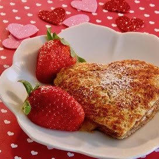

PBJ French Toast

Ingredients
- 6 tablespoons peanut butter
- 6 tablespoons mixed berry jam
- 1 cup milk
- 12 slices challah bread
- 4 eggs
- ¼ cup white sugar
- 2 tablespoons raspberry flavored liqueur
- ½ teaspoon vanilla extract
- 1 tablespoon vegetable oil, or as needed
Instructions :
- Spread 1 tablespoon peanut butter and 1 tablespoon jam onto one side of each of six bread slices; top each with another bread slice to make 6 sandwiches.
- Whisk milk, eggs, sugar, raspberry-flavored liqueur, and vanilla extract together in a bowl until smooth. Dip each sandwich into egg mixture, turning to coat both sides.
- Heat oil in a skillet over medium heat; cook sandwiches, working in batches, until golden brown, 3 to 4 minutes per side.
Back to the main page
Back to Raspberry Cheesecake Stuffed French Toast
Back to Nutella Stuffed French Toast